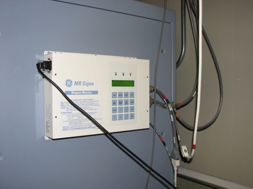
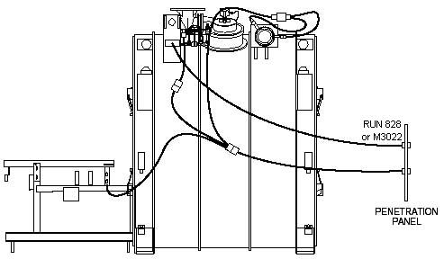
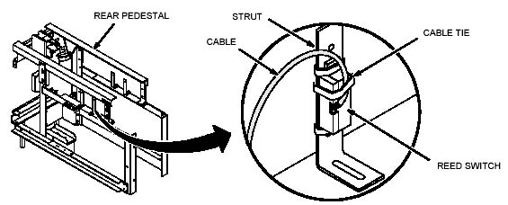
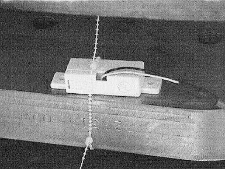
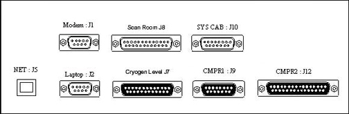
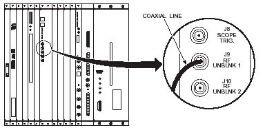
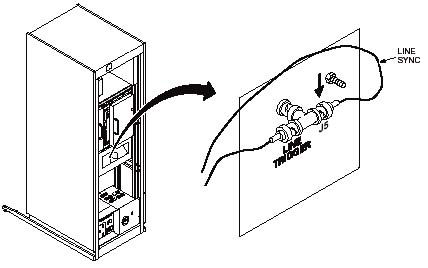
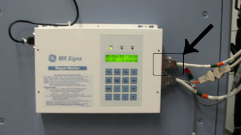

Operating Documentation
Direction 5670000, Rev# 1
Optima MR450w 1.5T Service Methods
Module Version 11.0, Version Date 11/5/09
Operating Documentation |
The Magmon3 consists of the front panel display, user keypad hardware, and software used to:
Measure helium vessel level
Measure helium vessel pressure
Provide helium vessel pressure control on magnets that have recondenser systems, i.e., LCC and HFO magnets
Measure coldhead and magnet shield/recondensor temperatures
Measure coldhead cycling (for HFO systems)
Monitor two coldheads and two compressors
Measure water flow and temperature for the water-cooled compressor(s)
Monitor status of compressors
Auto restart the compressor(s) after interruption in power or cooling
Detect the loss of the magnet field
The Magmon3 is designed to interface with the following GE-manufactured magnets:
S2 through S5 - 1.5T
MR Max - 0.5T (if installed on Signa System)
Compact Magnet - 0.5T (if installed on Signa System)
SX - 1.0T (including Mobile)
CX - 1.0T / 1.5T (including Mobile)
LCC - 1.0T / 1.5T (including Mobile)
LCC - RB 1.5T
DVw - 1.5T
LCC300 - 3.0T
HFO - 0.7T
GE Oxford - 7.0T
The Magmon3 is designed to interface with the following compressors:
Leybold Models: RW4000, RW4200, RW6000, RW6200, CP4000, CP4200 and CP6000
Sumitomo Models: CSA-71A, CSW-71C, CSW-71D, CNA-61C & D, F-50, and HC10
| NOTE: | A water flow / water temperature sensor is externally installed in the coolant supply line except .for air cooled compressors. |
The Magmon3 device, sensors and cables are shipped with Signa product line systems. Refer to Magmon3 Collector Structures.
The Magmon3 Kit structures provide most of the devices and cables needed during installation. However, one or more of the following items may need to be obtained, depending on system requirements and needs.
Additional parts may be needed for non-zero boil-off magnet. All are stocked and can be ordered through normal GPRS channels.
Table 1: Additional Parts for Non-Zero Boil-Off Magnet
| Part Number | Description | Where Used |
| 46-328000G981 | (833) FJ4 TO MS5-A1-A6-JR (used for Sumitomo Compressor) | Sumitomo CSW-71A, CSW-71C, CNA-61C & D, F-50, and HC-10 Compressors |
| 2116875 | (833B) FJ4 TO MS5-A1-A6-JR, (used on Leybold RW4000 Compressors) | Leybold RW 4000, RW4200, RW6000 and RW6200 Compressors |
| 2404555 | (1278) FJ4 to MS5-A1-JR (used on Leybold CoolPak Compressors) | Leybold CoolPak (CP) 4000, 4200, 6200, and 6200D Compressors |
Table 2: Additional Parts Not Related to Shield Cooler System
| Part Number | Description | Where Used |
| 2394952 | Magnet Monitor 3 with power cord; Laptop crossover network cable; Installation/Operator Manual | All GE Magnets, S2 forward |
| 46-318042P1 | (627) Lakeshore Meter Cable 11 ft. long; Coldhead Sleeve to Rear Pedestal for measuring shield temperatures | All GE Magnets, S2 through CX |
| 2204485 | J24 Cable Magnet Monitor, System Cabinet - TPS, Connector A (15-Pin Sub D, MR2 A11 J24); Connector B (SMA Plug, MR2 IPG J9); Connector C (BNC Plug, MR2 PDU J5) | LX Systems Cabinet with TPS Chassis |
| 46-296816P1 | Adapter, BNC Tee, 50-ohm Amphenol #31-200 - All Center Conductors are Silver Plated (Rev Tk, 11/91). Has Rexolite Insulation. Used with System Cabinet cable 2204485 for MR2-PDU-J5. | LX Systems Cabinet with TPS Chassis |
| 46-265067P1 | I/F Panel Cable Screw Lock Connector | All System Cabinets |
| 2322581 | For System Cabinets with an MGD Chassis: Order interface cable P/N 2322581. | Excite Systems Cabinet with MGD Chassis |
| 2245794-2 | MagMon3 Global Modem Kit | All monitored sites as needed |
| 2271497 | (942) Ethernet Cable | All Magnets |
| 46-271920P3 | 25-Pin Penetration Panel Filter | All Magnets - Use when 25-Pin filter is not available on Pen Panel. |
| 46-221754P3 | Penetration Panel Filter Gasket | All Magnets - Use when 25-Pin filter is not available on Pen Panel. |
Additional cables for sites where the Penetration Panel is more than 60 ft. away from the Magmon:
25-Pin Male-Female, 10 ft. Cable (46-271601G19)
25-Pin Male-Female, 20 ft. Cable (46-271601G21)
25-Pin Male-Female, 30 ft. Cable (46-271601G23)
25-Pin Male-Female, 40 ft. Cable (46-271601G25)
25-Pin Male-Female, 50 ft. Cable (46-271601G27)
Modem-Based Systems
Multiplexer with four station lines:
115 VAC Power Supply (46-328475P1)
220 VAC, 50 Hz Power Supply (46-328475P3)
Multiplexer with eight station lines:
115 VAC Power Supply (46-328475P2)
220 VAC, 50 Hz Power Supply (46-328475P4)
| NOTE: | On OpenSpeed, TwinSpeed and Signa 7.0T, there are dedicated 115 VAC outlets inside the Main Disconnect Panel (MDP) for powering the Magmon, Modem and Multiplexer Box. |
This is the recommended sequence of steps for installing a new Magmon3 and establishing a connection to InSite2:
Perform inventory of all hardware prior to installation. Refer to Collector Structures.
Install the Magmon3 unit. Refer to Section 3 and Component Specifications.
Install the Modem (not used on all systems). Refer to Section 3.2 and to Component Specifications.
Install the Remote Alarm Box (not used on all systems). Refer to Section 3.13 and to Component Specifications.
(For 7.0T systems) Physically install the Lock Coil Timer. Refer to Direction 2357818, GE HCO 7.0T/900 High Field Magnet and Cryogen Subsystems.
Install the water flow / temperature meter(s). Refer to Section 3.3 and to Component Specifications.
Install the pressure transducer on the magnet (installed base upgrades only). Refer to Section 3.4 and to Component Specifications.
Install and connect Magmon3 system cables. Refer to Interconnect Diagrams.
Apply AC power to the Magmon3 and Modem (if used). Refer to Interconnect Diagrams.
| NOTE: | On OpenSpeed, TwinSpeed and Signa 7.0T, there are dedicated 115 VAC outlets inside the Main Disconnect Panel (MDP) for powering the Magmon, Modem and Multiplexer Box. For all other systems, the Magmon3 will plug into customer-provided 7 x 24 wall outlets. |
Become familiar with the front panel keypad and user display. Refer to User Interface Panel.
Connect a laptop to the Magmon3. Refer to Laptop Connectivity.
Put the Magmon3 into web mode; log in on the first web page and initialize the proprietary mode. Refer to Initializing Proprietary Mode.
Set the date and time on the Magmon3. Refer to Time and Date.
Select the correct magnet type. Refer to Magnet Type.
Fill in and submit the input fields on the System ID page. Refer to System ID.
Establish the correct network settings on the Network page. Refer to Network.
Fill in and submit the input fields on the Insite2 page. Refer to InSite2.
Click [Logout] on the top left side of the web page to activate the new settings.
Wait at least ten minutes, then check for alarms on the front panel as indicated by the alarm LED and the [Alarms] button. Refer to User Interface Panel.
Put the Magmon3 into Web mode; log into the web interface and inspect the View Alarms, View Event Log, and View Insite2 Log pages. Refer to View Data Screens.
Perform an InSite Checkout.
Table 3: Required PPE and Safety Items
| Item | Description |
|---|---|
| 1 | Safety Glasses |
| 2 | Safety Shoes |
| 3 | Pair of Gloves |
| 4 | Restricted Access Signage |
The following tools are required to install the Magmon3:
Nonmagnetic Adjustable Wrench
Nonmagnetic 9/16 inch Combination Wrench
Nonmagnetic Flat-Blade Screwdriver
Ruler
Utility Knife
Nut Drivers, 3/16 and 1/4 inch sizes
Helium Resistance Box (46-265286G1)
Digital Volt Meter (DVM)
No. 2 Phillips Screwdriver
Static Wrist Strap
Shallow Container (to catch water after disconnecting the hose to the Shield Cooler Compressor)
Tools and hardware needed to mount Magmon to wall such as: power drill, drill bits, wall anchor system, etc.
Laptop computer (minimum requirement is Windows 2000 with Internet Explorer or Netscape Navigator)
Crossover Network Cable (supplied with every Magmon3 device)
Six M4 x 8 to 20 mm Phillips Pan-Head Screws for mounting to Heat Exchange Cabinet (HEC), not included
For MR750, MR450, and MR450w systems, the Magmon3 should be attached to the HEC. See Illustration 1.
Illustration 1: Magmon3 Mounting on HEC

The Magmon3 unit is designed for wall mounting. The location of the unit within the Equipment Room on new system installations should be shown on the customer’s architectural drawings. For Signa OpenSpeed, Signa TwinSpeed and Signa 7.0T systems, the Magmon3 device is mounted next to the Main Disconnect Panel (MDP) because there are 120 VAC receptacles inside the MDP designated for the Magnet Monitor and a modem.
For systems where the GE MDP is not included, the customer is required to provide a dedicated circuit that will supply the Magmon with 7 x 24 AC power.
For installed base systems receiving a Magmon3 for the first time, make sure the location complies with the equipment specifications for Gauss levels and service clearance. Refer to Component Specifications.
For installed base systems that already have a Magmon2 (SHeM manufactured by Granite) and are upgrading to a Magmon3, mark new hole locations on the wall because the mounting hole patterns are different. Refer to Component Specifications for mounting hole dimensions.
Table 4: Field-Supplied Items
| Item | Description | Quantity |
|---|---|---|
| 1 | Electric Hand Drill | 1 |
| 2 | Assorted Drill Bits (size is dependent on wall anchor system) | As required |
| 3 | Wall Anchor Hardware (to mount the Magmon3 device) | 4 |
| 4 | Hand Tools, Screws, Socket Drive (size dependent on wall anchor system) | As required |
| 5 | Tape Measure or Ruler (for laying out the hole locations) | 1 |
Table 5: Personal Protective Equipment
| Item | Description | Quantity |
| 1 | Safety Glasses | 1 pair |
| 2 | Protective Gloves | 1 pair |
Anchor the Magmon to the wall using all applicable codes for the site. For customers without the GE MDP, make sure a nonswitched 120/240 VAC power is within 6 feet of the mounting location of the Magmon.
The Magmon3 automatically adjusts to line voltage and line frequency, so no further adjustments are required.
Do not connect the AC power cord to the Magmon3 until all cabling is completed. (The Magmon3 does not have an ON-OFF switch for power control.)
If preferred, the Magmon3 may be plugged into a 220 VAC outlet. Obtain a power cord with the appropriate connector.
If broadband connectivity is not available, a Global Modem is used for connectivity to the back office. The Global Modem will source its power from the same receptacle as the Magmon3.
For Signa OpenSpeed, Signa TwinSpeed and Signa 7.0T systems, the Global Modem device is mounted above the Magmon3 and next to the Main Disconnect Panel (MDP) because there are 120 VAC receptacles inside the MDP designated for the Modem and Magnet Monitor. See Illustration 2.
Illustration 2: Magmon3 / Modem Powered from MDP

For systems where the GE-designed MDP is not installed, the customer is required to provide a dedicated circuit that will supply the Magnet Monitor and Modem with 7 x 24 AC power.
Use supplied Velcro to secure the modem to the wall above the Magnet Monitor.
Use the proper power adapters for the power connection from the wall to the power supply. (The modem power supply will work for any voltage and frequency.)
Connect Cable Run 940, provided with the Global Modem Kit, between the Magnet Monitor J1 and Modem Serial Connector.
The turbine style water flow / temperature meter is designed to be installed in the supply waterline for all compressors except air cooled compressors.
Table 6: Field-Supplied Items
| Item | Description | Quantity |
| 1 | Five-gallon Pale (empty) | 1 |
| 2 | Rags or Towels | 3 to 5 |
| 3 | Electric Hand Drill | 1 |
| 4 | Assorted Drill Bits | As required |
| 5 | Mounting Clamps (for 1/2 brass pipe) | 2 per flow meter |
| 6 | Wall Anchor Hardware (to support the flow meter) | 2 per flow meter |
| 7 | Hand Tools, Screws, Socket Drive (size dependent on wall anchor system) | As required |
Table 7: Personal Protective Equipment
| Item | Description | Quantity |
| 1 | Safety Glasses | 1 pair |
| 2 | Rubber Gloves | 1 pair |
| ||||
| The flow meter must be mounted horizontally with the inlet and
outlet piping located at the top as shown in Illustration 3. This orientation allows any trapped air in the lines
to pass through the meter cavity. Do NOT remove the 5-inch length of copper pipe attached to inlet and outlet ports of the meter. This straight length of pipe is required to minimize turbulent flow through the meter, which impacts the performance of the meter. The flow meter is bi-directional; it does not matter which end is used for the inlet and outlet. | ||||
Illustration 3: Flow Meter Orientation

Mount the flow meter to any vertical surface. Do not lay the meter flat on the floor, which will result in excessive impeller wear and degrade the performance of the unit over time.
Shut off the water flow to the Coldhead Compressor, and make sure to shut off both the supply and return lines to minimize water spillage.
Place a container under the inlet water line hose to catch any water that may run off, and cut the hose far enough back from the compressor to allow connections to be made to the hose barb connectors on the water flow meter.
Connect the cut hose to the inlet and outlet sides of the water flow meter and secure with a hose clamp.
Turn on the water supply and return line valves; check all fittings for leaks, and repair leaks as necessary.
| ||||
| If water from the compressor spills, clean it up following hospital procedures as the water may contain chemicals, such as glycol. | ||||
The pressure transducer ships already installed on all forward production magnets. This procedure is intended for installed base magnets where a pressure transducer is not installed.
Locate the pressure transducer and assorted plumbing fittings in the Magmon3 Upgrade Kit.
Attach the pressure transducer to the vent plumbing on the magnet just after the mechanical pressure gauge, using the appropriate plumbing adaptors.
Leak test the plumbing fitting, and correct any leaks as needed.
The Pressure Transducer, Magnet and Coldhead Temperature Sensors, and Reed Switch generate signals incorporated into a cable that enters the Magnet Room through the Penetration Panel. These signals aid in assessing boil off, magnet quench and proper maintenance of vessel pressures before, during, and after a helium fill.
Most of the hardware installation can be performed while the customer is using the system. The Magnet Monitor can be shut down and worked on while the Signa System is running.
The Magnet Room is needed for about one hour to install cables and sensors. Remove the twist locks around the cables before connecting cables in the Magnet Room.
The three to four hours of installation time in the Equipment Room do not require the system to be down.
Refer to Interconnect Maps, and use the appropriate interconnect map for the magnet system being worked on.
Illustration 4: LCC and DVw Magnet Room Cabling

Refer to Illustration 4 for LCC cable routing. Refer to Illustration 5 for typical HFO cable routing.
Illustration 5: HFO Sensor Cabling

| NOTE: | Do not coil the cables under the rear pedestal. Serpentine any excess cable in the cable trough so it will not interfere with scanning. |
| NOTE: | The Magmon3 does not use this Reed switch. Installation is optional. |
Position the Reed Switch where it detects the magnetic field. The contacts are Open when the Read Switch detects a magnetic field. (Usually, the switch can be placed vertically on one of the support struts on the rear pedestal. See Illustration 6.)
Wrap two Cable Ties (46-208758P3) around the top and bottom of the Reed Switch, and the support strut to hold the switch in place. See Illustration 6.
Use an additional cable tie to secure the cable to the strut to prevent the wires from being pulled out of the switch, and move the ends of the cable ties to the back of the strut.
Illustration 6: Reed Switch Placement

| NOTE: | The Magmon3 does not use this Reed switch. Installation is optional. |
| NOTE: | The Reed Switch (2108790) is pre-assembled to Run 830, the Magnet Room Interface Cable (2222797). |
Position the Reed Switch on the bottom plate of the magnet, and secure the Reed Switch to the magnet using cable ties through an open bolt hole as shown in Illustration 7. Make sure the orientation of the switch is the same as shown in Illustration 7 to properly detect the magnetic field.
Illustration 7: Reed Switch Placement HFO

Use an additional cable tie to secure the cable to the magnet and prevent the wires from being pulled out of the Reed Switch.
Refer to Interconnect Maps , and use the appropriate interconnect map for the magnet system being working on. SeeIllustration 8.
Illustration 8: Magmon3 Interface Panel Connector Locations

Install and route cable from the Magmon3 J7 to the Pen Panel using the Run # identified on the interconnect map.
Install and route cable from the Magmon3 J8 to the Pen Panel using the Run # identified on the interconnect map.
Install and route cable from Magmon3 J9 to the Coldhead Compressor using the Run # identified on the interconnect map.
| NOTE: | For nonzero boil-off magnets, the Compressor Interface Cable must be ordered separately. See Non-Zero Boil-Off Cable Connector for proper part numbers. |
(For HFO only) Install and route cable from Magmon3 J12 to the Second Coldhead Compressor using the Run # identified on the interconnect map.
Install and route cable from Magmon3 J10 to the System Cabinet using Run 823.
Connect the power cord between Magmon3 and the customer-supplied 24 x 7 power source.
Refer to Run 823 shown in Illustration 9:
Connect the MSM1-A1-J10 end to the Magnet Monitor.
Route the cable to the interface panel at the lower rear of the System Cabinet / RF System Cabinet.
(For Pre-Excite Systems) It may be necessary to install a pair of Connector Joiners (46-265067P1) in an empty 15-Pin opening (J24 if available) on the interface panel.
Connect the MR2-A11-J24 end of Run 823 to the above.
Illustration 9: Connect Run 823

For Run X (no number) internal to an LX System Cabinet:
| NOTE: | All Excite System Cabinets have the internal cable pre-installed prior to shipping to the customer. |
Connect the MR2-A11-J24 end to the Interface Panel Connectors installed above.
Carefully thread the MR2-IPG-J9 end through to the front of the System Cabinet, and connect to J9 (RF UNBLANK1) of the IPG Board on the front of the cabinet. See Illustration 10.
At MR2-PDU-J5 in the System Cabinet, remove the existing cable and replace it with a BNC Tee. Connect the existing cable and the MR2-PDU-J5 end of Run X to the BNC Tee. See Illustration 11.
Install the Jumper Plug (2239626) on the back of the Tyme Board in position J5.
| NOTE: | This jumper plug eliminates the low helium message displayed on the console. Some of the early sites may not have the jumper plug. Pins 4 and 6 of Connector J5 (Cryo-mon) can be shorted on the Tyme Board to eliminate the message. |
Illustration 10: RF Unblank Connection

Illustration 11: Line Sync Connection

Connect Run E3020 as described in the following steps:
Connect the MON-J10 end of Run E3020 to the Magnet Monitor (see Illustration 12).
Route the cable to the interface panel at the top of the System Cabinet / RF System Cabinet.
Connect the PEN-J13 end of Run E3020 to the interface panel (see Illustration 13).
Illustration 12: Connect MON-J10 to the Magnet Monitor

Illustration 13: Connect PEN-J13 to the Interface Panel

Find a suitable location for the MUX Box near the Magnet Monitor.
Connect the power cord for the MUX Box to the MDP into the AC outlet labeled UPS power.
Connect the customer phone line input (through the UPS) to the MUX Box port labeled phone line in, and connect the phone line between the Global Modem and the MUX Port 1.
| ||||
| Make sure Port 1 of the MUX Box is used for the Magnet Monitor. The MUX Box is NOT connected to the UPS. If the site were to loose power, the MUX Box will default to Port 1, which will allow the Magnet Monitor to dial out if the MUX Box loses power. | ||||
Remove the AC jumper between J1 and J2 in the Main Disconnect Panel (MDP). Locate the UPS In and UPS Out labels. Place the UPS In label over Outlet J2, and the UPS Out label over Outlet J1.
Position the UPS near the MDP and the Magmon; connect the power cable, provided with the UPS, to the MDP AC outlet labeled UPS Out. (The cable must be routed through the bottom of the MDP cabinet. See Illustration 14.)
Illustration 14: MDP Connections

Find Cable Run 939 provided with the Magmon Cable Kit, and connect it from the UPS output to the MDP AC outlet labeled UPS Input. (The AC outlet in the MDP is a male connector. The cable must be routed through the bottom of the MDP cabinet.)
Connect the Magmon AC power cable to the MDP AC outlet labeled Magnet Monitor Output. (This cable must be routed through the bottom of the MDP cabinet.)
Connect the Serial Cable provided with the UPS to the Magnet Monitor's UPS Comm Port connector.
Connect the Customer Phone Line to the UPS phone in connection; run the customer supplied phone line from the UPS phone out connection to the global modem (only for dial-up).
Connect the provided strain reliefs for the power cables routed through the MDP panel (included in the Magmon Cable Kit).
The Remote Alarm Box (optional for all other magnet types) is shipped with HFO 0.7T and the 7.0T Magnet Monitor Kits. Refer to Magmon3 Component Specifications for hardware specifications.
Refer to Interconnect Maps, and use the appropriate interconnect map for the magnet system being worked on.
Choose an appropriate place on or near the Operator Workspace table for locating the Remote Alarm Box.
Mount the Remote Alarm Box in this location.
Route Cable Run 915 from the Magmon3 to the Remote Alarm Box.
Install the Adapter Cable Run 916 to Magmon3 J7.
Connect the other ends of the Run 916 as defined on the interconnect map.
After verifying that all cabling and connections to the Magmon3, Modem (if phone connection is utilized), MUX Box (if used), Broadband (if network connection is used), and the Magnet are correct, power up the Magmon3 by plugging the power cable into Magmon3 J2.
| NOTE: | If used, the UPS does not require a serial connection to the Magmon3. The Magmon3 monitors magnet parameters to determine if power is lost. |
No calibration is required, but the helium reading verification check should be performed every year. Verify the Magmon3 helium level reading is tracking properly by performing the following tasks:
Obtain the Helium Meter Calibration Box, P/N 46-306864G1.
Observe the helium readings for the vessel.
Disconnect the helium level cable, located on the Magnet Interconnect Box, from the magnet.
Connect the Helium Meter Calibration Box to the Cable going to P302-Upper, and adjust the resistance on the Helium Meter Calibration Box to the values listed in Table 8.
Press the [Sample] button on the Magmon.
Verify that the helium reading is within the specification listed in Table 8. For noncompliant devices, replace the unit.
Table 8: Resistance/Helium
| Resistance | Value Nominal | Value Specification |
| 0 ohms | 100% | 98 to 100% |
| 230 ohms | 66.4% | 63.4 to 69.4% |
| 460 ohms | 32.7% | 29.7 to 35.7% |
| 686 ohms | 0.0% | 0 to 3% |